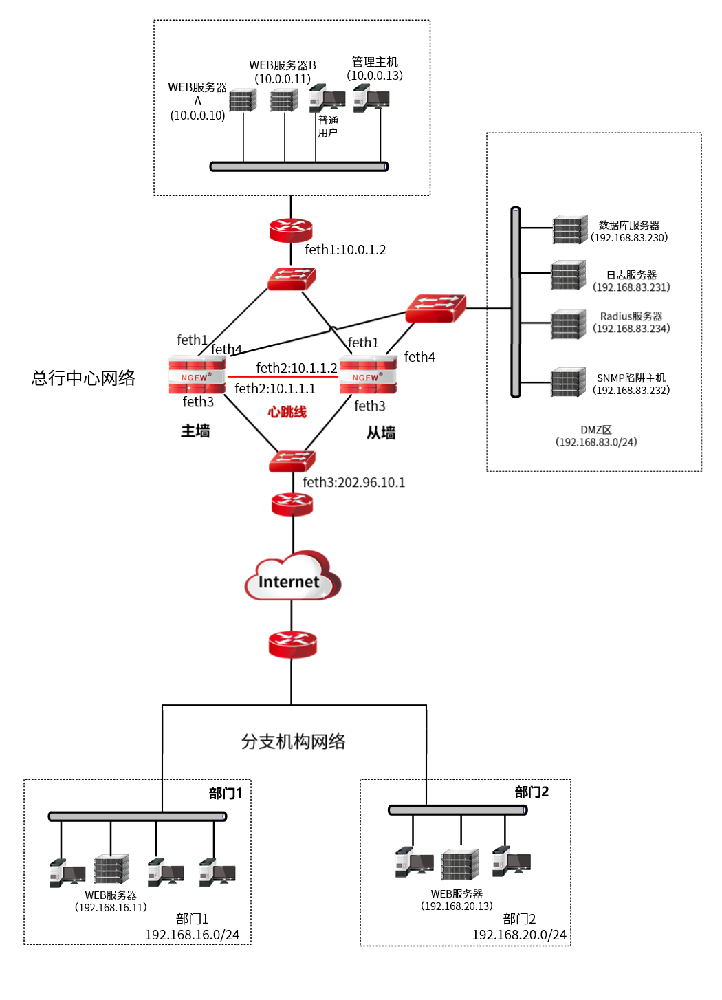

l用户网络

l基本需求
ü网络规划
总行中心网两台防火墙以双机热备模式工作，两防火墙均以feth2口为心跳口，由心跳线连接用来同步配置信息及状态信息。
ü需求
1）主墙与备墙以feth2口为心跳口，由心跳线连接用来协商状态及配置信息。
2）部门1只允许访问中心网络WEB服务器A，部门2只允许访问中心网络WEB服务器B，且只有认证用户才可访问中心网络WEB服务器A和WEB服务器B。
3）中心网络用户（真实IP：10.0.0.6）访问分支WEB服务器（真实IP：192.168.16.11），总行中心网络用户显示IP地址为11.11.11.11，内网WEB服务器显示IP地址为12.12.12.12。
4）管理员可通过管理主机浏览近一个月内分支机构网络各认证用户访问中心网络的日志记录。
5）通过SNMP检测链路状态和流量。
6）CGI用户以门户方式在通过第三方服务器（Radius Server,192.168.83.234，认证端口UDP1812）进行身份认证。
üIP规划
IP规划如下表所示。
设备/区域 |
IP规划 |
设备/区域 |
IP规划 |
|---|---|---|---|
主墙 |
feth0：10.0.2.2/24（管理口） feth1：10.0.1.1/24 feth2：10.1.1.1/30（心跳口） feth3：202.96.10.10/24 feth4：192.168.83.1/24 |
总行中心网络 |
用户：10.0.0.0/24 WEB服务器A：10.0.0.10 WEB服务器B：10.0.0.11 管理主机：10.0.0.13 |
备墙 |
feth0：10.0.3.3/24（管理口） feth1：10.0.1.1/24 feth2：10.1.1.2/30（心跳口） feth3：202.96.10.10 feth4：192.168.83.1/24 |
分支部门1 |
用户：192.168.16.0/24 WEB服务器：192.168.16.11 公网IP地址：200.0.0.10-200.0.0.13 |
总行DMZ区 |
数据库服务器： 192.168.83.230 日志服务器： 192.168.83.231 Radius服务器： 192.168.83.234 SNMP陷阱主机：192.168.83.232 |
分支部门2 |
用户：192.168.20.0/24 WEB服务器：192.168.20.13 公网IP地址：201.0.0.10-201.0.0.13 |
l配置要点
ü配置静态路由，保障防火墙与其他网络设备可通信。
ü配置访问控制规则，控制分支部门1和部门2对总行WEB服务器的访问。
ü配置双向NAT规则，使中心网络用户（10.0.0.6）可直接通过分支WEB服务器的私网IP地址192.168.16.11访问WEB服务器。
ü配置Radius认证服务器，通过Radius认证服务器验证访问防火墙的用户。
ü配置日志记录条件，使防火墙能记录“认证用户”类型的日志。
ü配置SNMP管理主机，检测防火墙的链路状态和流量。
ü配置总行主墙和备墙的双机热备功能。
l配置步骤
ü配置主墙
ü配置备墙